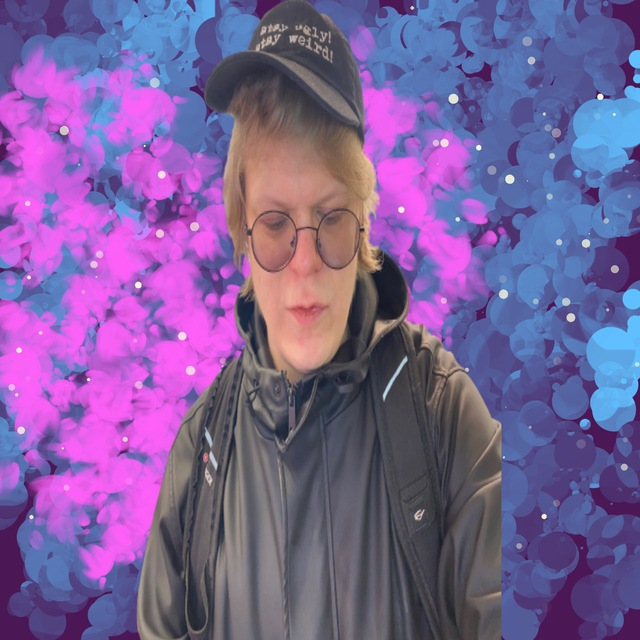

Data Analysis and Statistics in R
Free textbook (Russian) on wrangling, visualization, statistics, and reproducible workflows with R and the tidyverse.

Researcher, R developer, and statistics educator based in Kiel, Germany. MSc in Cognitive Sciences (HSE, Moscow); background in brain stimulation and neuroimaging — TMS, tACS, EEG, MEG.
My trajectory runs from experimental neuroscience toward computational modeling — a deliberate accumulation of empirical, statistical, and programming skills built over a decade of research and teaching. Looking for a PhD position at the intersection of computation, cognition, and neural dynamics.
My curiosity extends well beyond neuroscience — to philosophy of mind, digital humanities, history, and a few other rabbit holes.
Free textbook (Russian) on wrangling, visualization, statistics, and reproducible workflows with R and the tidyverse.
R client for the DraCor API — programmatic access to multilingual drama corpora in TEI-XML. Play texts, metadata, character networks.
Interactive visualization of drama corpus data — character interaction networks, corpus statistics, text exploration.
Unscripted streams working through real datasets in R: wrangling, modeling, visualization.
A small side project: pairwise comparisons of visual aesthetics from the CARI archive — build a personal top 5, see the global ranking.
A free typeface in two styles — Regular and Condensed. Available to download and use freely; this heading is set in it.